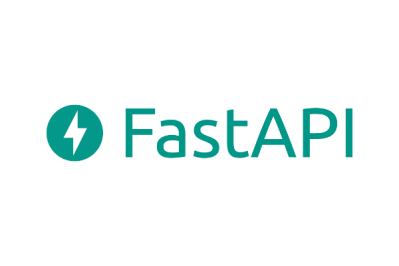
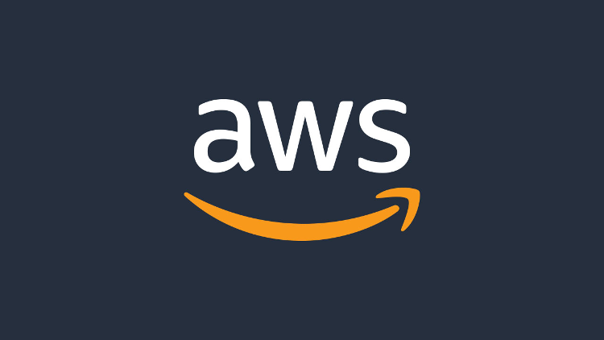
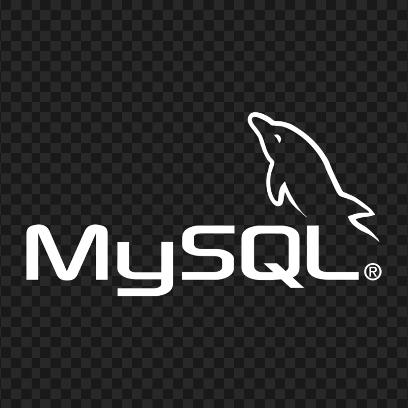

Criei uma API de Delivery completa rodando 100% na AWS.
Um backend profissional simulando um ambiente real de produção, com autenticação segura, banco de dados e deploy em nuvem.
O que essa API faz:• Cadastro e autenticação de usuários (JWT)
• Criação e gerenciamento de pedidos
• Adição de itens ao pedido
Persistência real no banco (RDS)
Tecnologias:Python + FastAPI | SQLAlchemy | OAuth2 + JWT | AWS (EC2 + RDS)
No vídeo mostro tudo funcionando na prática, inclusive salvando direto no banco de dados.
Cadastro de consumidores com nome, CPF, telefone e senha
Cadastro de vendedores com dados bancarios
Cadastro de produtos com imagem
Comunicação entre o front e backend usando fetch com JSON
Criação de uma API com Flask em Python. Essa API faz a ponte entre o frontend e o backend, permitindo o envio e armazenamento dos dados de forma segura e estruturada.
Tecnologias:Python + Flask, MySQL | HTML, CSS, JavaScript
No vídeo mostro tudo funcionando na prática, inclusive salvando direto no banco de dados.
Desenvolvi uma API de Foco e Produtividade utilizando Python + FastAPI como parte de um pequeno desafio técnico backend. A aplicação permite registrar sessões de foco e gerar diagnósticos inteligentes de produtividade com base nos dados armazenados.
Tecnologias:Python, FastAPI, SQLAlchemy, SQLite, Pydantic
Também trabalhei:
✅ arquitetura com routers
✅ validação de dados
✅ documentação Swagger
✅ persistência com SQLite
✅ organização modular do backend
O projeto está disponível no GitHub com README detalhado, imagens da aplicação e instruções para execução local. O repositório está totalmente configurado para execução.


